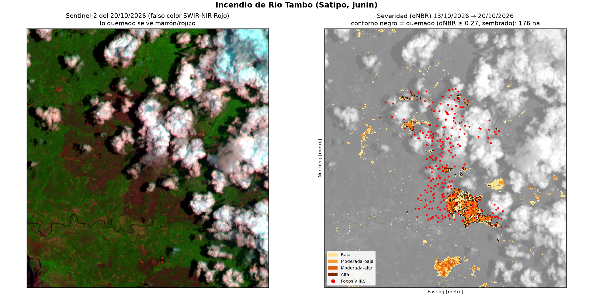
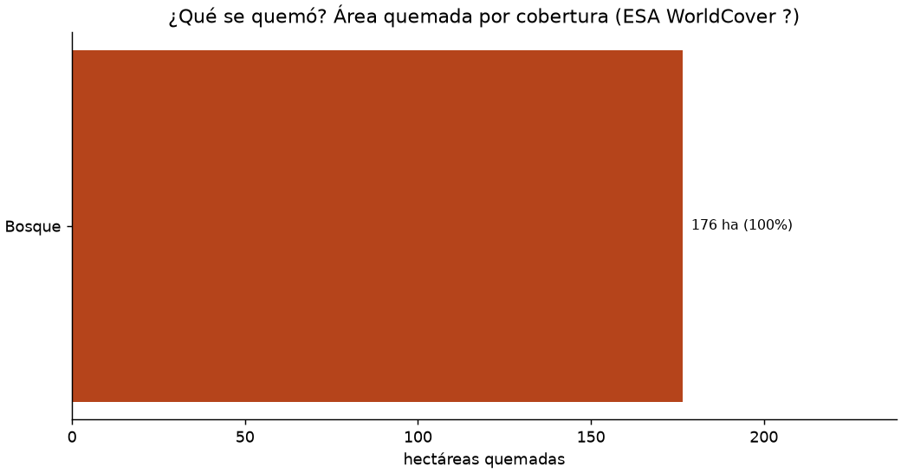
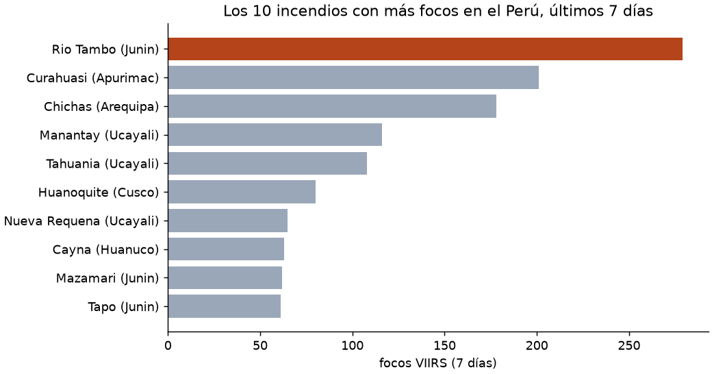

Un incendio activo de Junin medido desde el espacio con Sentinel-2 (dNBR), focos VIIRS de la NASA y la cobertura del suelo de la ESA. Todo con datos públicos y en CPU.
quemadas entre el 13/10/2026 y el 20/10/2026 (dNBR ≥ 0.27).
del área quemada era bosque según ESA WorldCover ?.
con severidad moderada-alta o alta: donde la vegetación tardará más en recuperarse.
279 focos VIIRS del 14/10/2026 al 17/10/2026 · #1 de 754 incendios del Perú en 7 días

Izquierda: Sentinel-2 en falso color (SWIR-NIR-rojo). Derecha: severidad dNBR con focos VIIRS (rojo) y límites distritales.
Activa o apaga capas: satélite, distritos, área quemada y focos (pasa el cursor para ver fecha y satélite).
El incendio de Rio Tambo (Satipo, Junin) quemó unas 176 ha entre el 13/10/2026 y el 20/10/2026 (dNBR ≥ 0.27, parches conectados a 279 focos VIIRS). Solo con el umbral, sin exigir focos cerca, saldrían 257 ha: la decisión de método cambia el número.
Lo que se quemó fue sobre todo 100% bosque (WorldCover ?).
32% del área quemada tiene severidad moderada-alta o alta (57 ha). En el Perú hubo 8 613 focos VIIRS del 14/10/2026 al 21/10/2026, agrupados en 754 incendios (451 con huella > 100 ha); este es el #1 por número de focos.

| Severidad (USGS) | ha |
|---|---|
| Baja | 84 |
| Moderada-baja | 120 |
| Moderada-alta | 55 |
| Alta | 2 |
| Distrito | Provincia | ha quemadas |
|---|---|---|
| Rio Tambo | Satipo | 176 |

Focos VIIRS (S-NPP, NOAA-20 y NOAA-21) del 14/10/2026 al 21/10/2026; 451 incendios tienen huella mayor a 100 ha.
Antes: 13/10/2026 · Después: 20/10/2026. De 15 fechas candidatas, elegí la más reciente con pocas nubes en cada lado.
16.4% y 53.1% en la zona del incendio. Enmascaré nubes y sombras con la capa SCL; quedó válido el 41% de la zona.
dNBR ≥ 0.27 = quemado. Solo cuento parches a ≤ 750 m de un foco VIIRS. Sin ese filtro saldrían 257 ha.
Focos a ≤ 1 km y ≤ 48 h forman un incendio. Analicé 3 km alrededor de sus focos, a 20 m por píxel, en UTM (no en grados).
Datos: NASA FIRMS (VIIRS) · Sentinel-2 L2A y ESA WorldCover vía Microsoft Planetary Computer · límites INEI (peru-geojson). Python: geopandas, rasterio, rasterstats, folium.